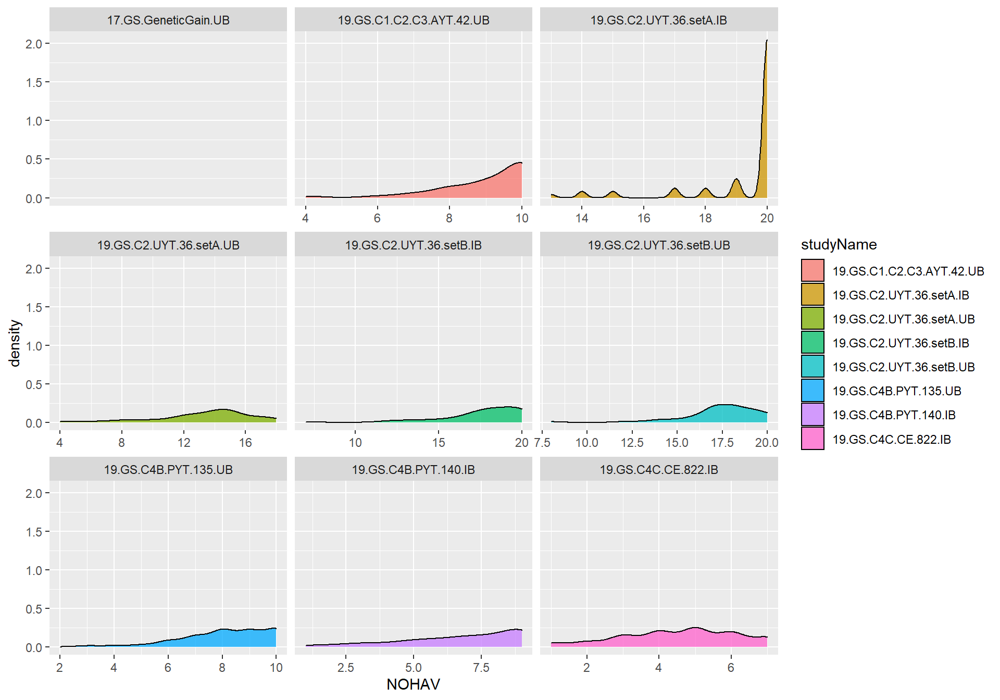
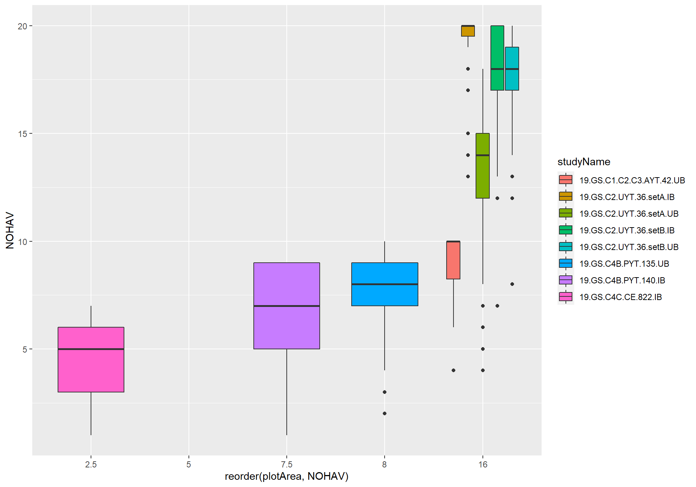
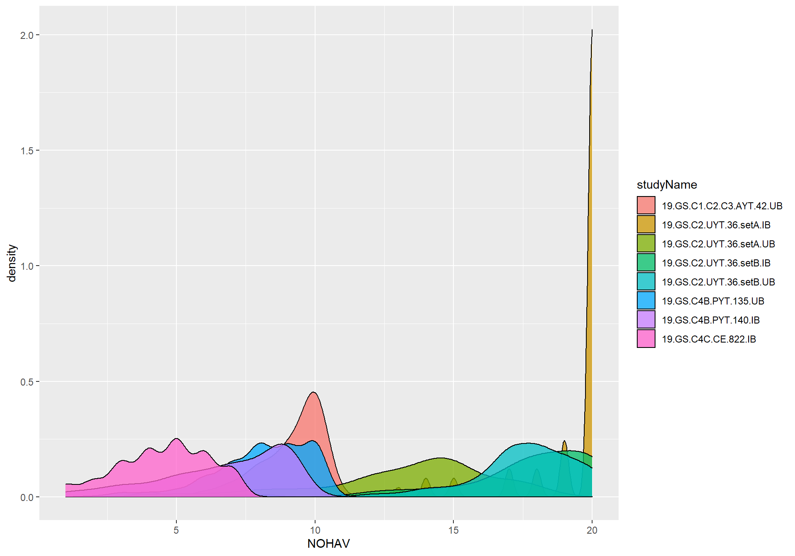
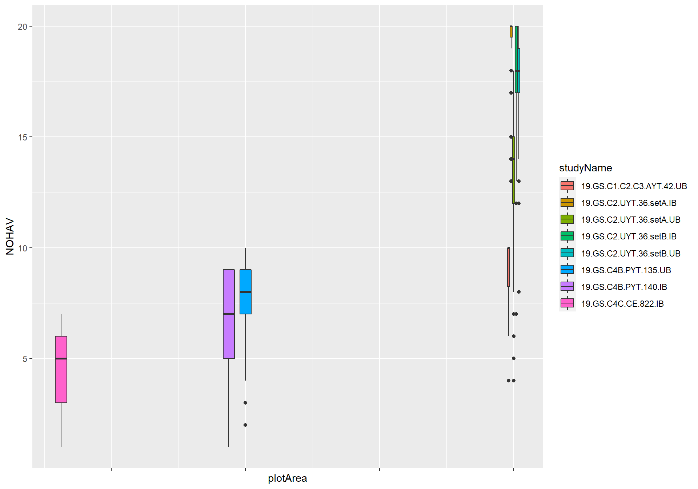

Last updated: 2022-04-04
Checks: 7 0
Knit directory: GSworkshopNG/
This reproducible R Markdown analysis was created with workflowr (version 1.7.0). The Checks tab describes the reproducibility checks that were applied when the results were created. The Past versions tab lists the development history.
Great! Since the R Markdown file has been committed to the Git repository, you know the exact version of the code that produced these results.
Great job! The global environment was empty. Objects defined in the global environment can affect the analysis in your R Markdown file in unknown ways. For reproduciblity it’s best to always run the code in an empty environment.
The command set.seed(20220324) was run prior to running the code in the R Markdown file. Setting a seed ensures that any results that rely on randomness, e.g. subsampling or permutations, are reproducible.
Great job! Recording the operating system, R version, and package versions is critical for reproducibility.
Nice! There were no cached chunks for this analysis, so you can be confident that you successfully produced the results during this run.
Great job! Using relative paths to the files within your workflowr project makes it easier to run your code on other machines.
Great! You are using Git for version control. Tracking code development and connecting the code version to the results is critical for reproducibility.
The results in this page were generated with repository version f6436ed. See the Past versions tab to see a history of the changes made to the R Markdown and HTML files.
Note that you need to be careful to ensure that all relevant files for the analysis have been committed to Git prior to generating the results (you can use wflow_publish or wflow_git_commit). workflowr only checks the R Markdown file, but you know if there are other scripts or data files that it depends on. Below is the status of the Git repository when the results were generated:
Ignored files:
Ignored: .Rproj.user/
Untracked files:
Untracked: data/BreedBaseGenotypesDownload.vcf
Untracked: output/phenotypes_cleaned.rds
Note that any generated files, e.g. HTML, png, CSS, etc., are not included in this status report because it is ok for generated content to have uncommitted changes.
These are the previous versions of the repository in which changes were made to the R Markdown (analysis/clean_phenos.Rmd) and HTML (docs/clean_phenos.html) files. If you’ve configured a remote Git repository (see ?wflow_git_remote), click on the hyperlinks in the table below to view the files as they were in that past version.
| File | Version | Author | Date | Message |
|---|---|---|---|---|
| Rmd | f6436ed | lfdelgadom | 2022-04-04 | Publish cleaned phenos |
| html | 2ab00ed | lfdelgadom | 2022-04-03 | HTML clean_phenos |
| Rmd | bd10c51 | lfdelgadom | 2022-04-03 | Upload data y create the Pheno_clean .Rmd |
library(tidyverse);Warning: package 'tidyverse' was built under R version 4.1.2-- Attaching packages --------------------------------------- tidyverse 1.3.1 --v ggplot2 3.3.5 v purrr 0.3.4
v tibble 3.1.6 v dplyr 1.0.8
v tidyr 1.2.0 v stringr 1.4.0
v readr 2.1.2 v forcats 0.5.1Warning: package 'ggplot2' was built under R version 4.1.2Warning: package 'tibble' was built under R version 4.1.2Warning: package 'tidyr' was built under R version 4.1.2Warning: package 'readr' was built under R version 4.1.2Warning: package 'purrr' was built under R version 4.1.2Warning: package 'dplyr' was built under R version 4.1.2Warning: package 'stringr' was built under R version 4.1.2Warning: package 'forcats' was built under R version 4.1.2-- Conflicts ------------------------------------------ tidyverse_conflicts() --
x dplyr::filter() masks stats::filter()
x dplyr::lag() masks stats::lag()library(genomicMateSelectR);
library(magrittr)Warning: package 'magrittr' was built under R version 4.1.2
Attaching package: 'magrittr'The following object is masked from 'package:purrr':
set_namesThe following object is masked from 'package:tidyr':
extractindata <- read.csv(here::here("data","phenotype.csv"),
na.strings = c("#VALUE!",NA,".",""," ","-","\""),
stringsAsFactors = F, skip=3)
meta <- read.csv(here::here("data","metadata.csv"),
na.strings = c("#VALUE!",NA,".",""," ","-","\""),
stringsAsFactors = F, skip=2)
meta %<>%
dplyr::rename(programName = breedingProgramName,
programDescription = breedingProgramDescription,
programDbId = breedingProgramDbId)
indata <- dplyr::left_join(indata,meta)Joining, by = c("studyYear", "programDbId", "programName",
"programDescription", "studyDbId", "studyName", "studyDescription",
"studyDesign", "plotWidth", "plotLength", "fieldSize",
"fieldTrialIsPlannedToBeGenotyped", "fieldTrialIsPlannedToCross",
"plantingDate", "harvestDate", "locationDbId", "locationName")indata %<>% # <- + %>%
dplyr::filter(observationLevel=="plot")
dbdata <- indataChecklist: Are the data plot-basis, plant-basis or a mixture? If plant-basis data are present, should they be converted to plot-basis for further analysis?
dbdata %>% count(observationLevel) # number of observation observationLevel n
1 plot 2515Checklist: What experimental designs are present? How are they represented by the variables in the dataset? Are all designs consistent with your expectations, for example relative to the reported “trialType,” “studyName” and/or “studyDesign?”
In this step, in the past, I have not been certain of the experimental designs of the trials I had downloaded. I was also not certain how the designs were represented in the column-names. For this reason, I developed an ad hoc custom code to “detect” the designs. I built the genomicMateSelectR function detectExptDesigns()
library(gt)Warning: package 'gt' was built under R version 4.1.3dbdata %>%
count(studyName,trialType, studyDesign, numberBlocks,numberReps,entryType) %>%
spread(entryType,n) %>%
gt() %>%
tab_options(table.font.size = pct(75))| studyName | trialType | studyDesign | numberBlocks | numberReps | check | test |
|---|---|---|---|---|---|---|
| 17.GS.GeneticGain.UB | genetic_gain_trial | Augmented | 11 | 1 | 18 | 774 |
| 19.GS.C1.C2.C3.AYT.42.UB | NA | Alpha | NA | NA | 15 | 110 |
| 19.GS.C2.UYT.36.setA.IB | Uniform Yield Trial | Alpha | 6 | 2 | 10 | 58 |
| 19.GS.C2.UYT.36.setA.UB | Uniform Yield Trial | Alpha | 6 | 2 | 10 | 62 |
| 19.GS.C2.UYT.36.setB.IB | Uniform Yield Trial | RCBD | 6 | 2 | 10 | 56 |
| 19.GS.C2.UYT.36.setB.UB | Uniform Yield Trial | Alpha | 6 | 2 | 10 | 62 |
| 19.GS.C4B.PYT.135.UB | Preliminary Yield Trial | Alpha | 30 | 2 | 12 | 258 |
| 19.GS.C4B.PYT.140.IB | Preliminary Yield Trial | Alpha | 28 | 2 | 31 | 242 |
| 19.GS.C4C.CE.822.IB | Clonal Evaluation | RCBD | 42 | 1 | 132 | 645 |
Summary table above shows:
studyDesign=="Augmented" does not have “check” vs. “test” distinguished in the “entryType.”trialType=="Clonal Evaluation" with studyDesign=="RCBD" but actually only 1 replication.Next, I’ll check if the replicate and blockNumber columns reliably distinguish complete and incomplete blocks in the data.
dbdata %>%
group_by(studyName) %>%
summarize(N_replicate = length(unique(replicate)),
N_blockNumber = length(unique(blockNumber))) %>%
gt() %>% tab_options(table.font.size = pct(75))| studyName | N_replicate | N_blockNumber |
|---|---|---|
| 17.GS.GeneticGain.UB | 1 | 11 |
| 19.GS.C1.C2.C3.AYT.42.UB | 3 | 3 |
| 19.GS.C2.UYT.36.setA.IB | 2 | 6 |
| 19.GS.C2.UYT.36.setA.UB | 2 | 6 |
| 19.GS.C2.UYT.36.setB.IB | 2 | 6 |
| 19.GS.C2.UYT.36.setB.UB | 2 | 6 |
| 19.GS.C4B.PYT.135.UB | 2 | 30 |
| 19.GS.C4B.PYT.140.IB | 2 | 28 |
| 19.GS.C4C.CE.822.IB | 1 | 42 |
Here, I notice that except 1 trial (19.GS.C1.C2.C3.AYT.42.UB) has the same number of reps and blocks.
The question is, are complete replications of the experiment indicated by replicate and incomplete sub-blocks represented by blockNumber
dbdata %>%
group_by(studyName) %>%
summarize(N_replicate = length(unique(replicate)),
N_blockNumber = length(unique(blockNumber)),
doRepsEqualBlocks = all(replicate == blockNumber)) %>%
gt() %>% tab_options(table.font.size = pct(75))| studyName | N_replicate | N_blockNumber | doRepsEqualBlocks |
|---|---|---|---|
| 17.GS.GeneticGain.UB | 1 | 11 | FALSE |
| 19.GS.C1.C2.C3.AYT.42.UB | 3 | 3 | TRUE |
| 19.GS.C2.UYT.36.setA.IB | 2 | 6 | FALSE |
| 19.GS.C2.UYT.36.setA.UB | 2 | 6 | FALSE |
| 19.GS.C2.UYT.36.setB.IB | 2 | 6 | FALSE |
| 19.GS.C2.UYT.36.setB.UB | 2 | 6 | FALSE |
| 19.GS.C4B.PYT.135.UB | 2 | 30 | FALSE |
| 19.GS.C4B.PYT.140.IB | 2 | 28 | FALSE |
| 19.GS.C4C.CE.822.IB | 1 | 42 | FALSE |
So for 1 trial, there are 3 complete blocks, no sub-blocks. For 6 trials, there are 2 complete replications and nested sub-blocks represented by the blockNumber variable. For 2 trials, there are only incomplete blocks.
Next, I decided to check that the replicate column definitely means complete blocks. The below might look a bit complicated, but I basically merge two summaries: (1) he overall number of accessions per trial, and (2) the average number of accessions per replicate per trial.
# the overall number of accessions per trial
dbdata %>%
group_by(studyName) %>%
summarize(N_accession=length(unique(germplasmName))) %>%
# the average number of accessions per replicate per trial
left_join(dbdata %>%
group_by(studyName,replicate) %>%
summarize(N_accession=length(unique(germplasmName))) %>%
group_by(studyName) %>%
summarize(avgAccessionsPerReplicate=ceiling(mean(N_accession)))) %>% # Ceiling function rounds a numeric input up to the next higher integer
group_by(studyName, N_accession, avgAccessionsPerReplicate) %>% summarize(doN_acceEqualave_acce = all(N_accession == avgAccessionsPerReplicate)) %>%
ungroup() %>%
gt() %>% tab_options(table.font.size = pct(75))`summarise()` has grouped output by 'studyName'. You can override using the
`.groups` argument.
Joining, by = "studyName"
`summarise()` has grouped output by 'studyName', 'N_accession'. You can
override using the `.groups` argument.| studyName | N_accession | avgAccessionsPerReplicate | doN_acceEqualave_acce |
|---|---|---|---|
| 17.GS.GeneticGain.UB | 753 | 753 | TRUE |
| 19.GS.C1.C2.C3.AYT.42.UB | 42 | 42 | TRUE |
| 19.GS.C2.UYT.36.setA.IB | 35 | 34 | FALSE |
| 19.GS.C2.UYT.36.setA.UB | 36 | 36 | TRUE |
| 19.GS.C2.UYT.36.setB.IB | 36 | 33 | FALSE |
| 19.GS.C2.UYT.36.setB.UB | 36 | 36 | TRUE |
| 19.GS.C4B.PYT.135.UB | 135 | 135 | TRUE |
| 19.GS.C4B.PYT.140.IB | 129 | 127 | FALSE |
| 19.GS.C4C.CE.822.IB | 657 | 657 | TRUE |
#> `summarise()` has grouped output by 'studyName'. You can override using the `.groups` argument.
#> Joining, by = "studyName"The numbers are very similar for all trials, indicating complete blocks.
One more: look at the min, mean and max number of accessions per blockNumber.
# the overall number of accessions per trial
dbdata %>%
group_by(studyName) %>%
summarize(N_accession=length(unique(germplasmName))) %>%
left_join(dbdata %>%
group_by(studyName,replicate,blockNumber) %>%
summarize(N_accession=length(unique(germplasmName))) %>% ungroup() %>%
group_by(studyName) %>%
summarize(minAccessionsPerBlock=ceiling(min(N_accession)),
avgAccessionsPerBlock=ceiling(mean(N_accession)),
maxAccessionsPerBlock=ceiling(max(N_accession)))) %>%
gt() %>% tab_options(table.font.size = pct(70))`summarise()` has grouped output by 'studyName', 'replicate'. You can override
using the `.groups` argument.
Joining, by = "studyName"| studyName | N_accession | minAccessionsPerBlock | avgAccessionsPerBlock | maxAccessionsPerBlock |
|---|---|---|---|---|
| 17.GS.GeneticGain.UB | 753 | 53 | 72 | 76 |
| 19.GS.C1.C2.C3.AYT.42.UB | 42 | 41 | 42 | 42 |
| 19.GS.C2.UYT.36.setA.IB | 35 | 11 | 12 | 12 |
| 19.GS.C2.UYT.36.setA.UB | 36 | 12 | 12 | 12 |
| 19.GS.C2.UYT.36.setB.IB | 36 | 9 | 11 | 12 |
| 19.GS.C2.UYT.36.setB.UB | 36 | 12 | 12 | 12 |
| 19.GS.C4B.PYT.135.UB | 135 | 9 | 9 | 9 |
| 19.GS.C4B.PYT.140.IB | 129 | 8 | 10 | 10 |
| 19.GS.C4C.CE.822.IB | 657 | 10 | 19 | 20 |
#> `summarise()` has grouped output by 'studyName', 'replicate'. You can override using the `.groups` argument.
#> Joining, by = "studyName"From this, you can see that except for studyName=="19.GS.C1.C2.C3.AYT.42.UB" the sub-blocks represented by blockNumber have only subsets of the total number of accessions in the trial, as expected.
Further, except for studyName=="17geneticgainUB" all trials have pretty consistently sized sub-blocks.
Now I will ad hoc create two variables (CompleteBlocks and IncompleteBlocks), indicating (TRUE/FALSE) whether to model using the replicate and/or blockNumber variable.
I also like to create explicitly nested design variables (yearInLoc, trialInLocYr, repInTrial, blockInRep).
dbdata %<>%
group_by(studyName) %>%
summarize(N_replicate=length(unique(replicate)),
N_blockNumber=length(unique(blockNumber)),
doRepsEqualBlocks=all(replicate==blockNumber)) %>%
ungroup() %>%
mutate(CompleteBlocks=ifelse(N_replicate>1,TRUE,FALSE),
IncompleteBlocks=ifelse(N_blockNumber>1 & !doRepsEqualBlocks,TRUE,FALSE)) %>%
left_join(dbdata) %>%
mutate(yearInLoc=paste0(programName,"_",locationName,"_",studyYear),
trialInLocYr=paste0(yearInLoc,"_",studyName),
repInTrial=paste0(trialInLocYr,"_",replicate),
blockInRep=paste0(repInTrial,"_",blockNumber))Joining, by = "studyName"Just to check:
dbdata %>%
count(studyName,CompleteBlocks,IncompleteBlocks) %>%
left_join(dbdata %>%
group_by(studyName) %>%
summarize(nRepInTrial=length(unique(repInTrial)),
nBlockInRep=length(unique(blockInRep)))) %>%
gt() %>% tab_options(table.font.size = pct(67))Joining, by = "studyName"| studyName | CompleteBlocks | IncompleteBlocks | n | nRepInTrial | nBlockInRep |
|---|---|---|---|---|---|
| 17.GS.GeneticGain.UB | FALSE | TRUE | 792 | 1 | 11 |
| 19.GS.C1.C2.C3.AYT.42.UB | TRUE | FALSE | 125 | 3 | 3 |
| 19.GS.C2.UYT.36.setA.IB | TRUE | TRUE | 68 | 2 | 6 |
| 19.GS.C2.UYT.36.setA.UB | TRUE | TRUE | 72 | 2 | 6 |
| 19.GS.C2.UYT.36.setB.IB | TRUE | TRUE | 66 | 2 | 6 |
| 19.GS.C2.UYT.36.setB.UB | TRUE | TRUE | 72 | 2 | 6 |
| 19.GS.C4B.PYT.135.UB | TRUE | TRUE | 270 | 2 | 30 |
| 19.GS.C4B.PYT.140.IB | TRUE | TRUE | 273 | 2 | 28 |
| 19.GS.C4C.CE.822.IB | FALSE | TRUE | 777 | 1 | 42 |
Cassavabase downloads use very long column-names corresponding to the full trait-ontology name. For convenience, I replace these names with abbreviations, documented here. For eventual upload of analysis results, names will need to be restored to ontology terms.
I also use this opportunity to subselect traits.
traitabbrevs<-tribble(~TraitAbbrev,~TraitName,
"CMD1S","cassava.mosaic.disease.severity.1.month.evaluation.CO_334.0000191",
"CMD3S","cassava.mosaic.disease.severity.3.month.evaluation.CO_334.0000192",
"CMD6S","cassava.mosaic.disease.severity.6.month.evaluation.CO_334.0000194",
"DM","dry.matter.content.percentage.CO_334.0000092",
"RTWT","fresh.storage.root.weight.per.plot.CO_334.0000012",
"NOHAV","plant.stands.harvested.counting.CO_334.0000010")
traitabbrevs %>% gt()#rmarkdown::paged_table()| TraitAbbrev | TraitName |
|---|---|
| CMD1S | cassava.mosaic.disease.severity.1.month.evaluation.CO_334.0000191 |
| CMD3S | cassava.mosaic.disease.severity.3.month.evaluation.CO_334.0000192 |
| CMD6S | cassava.mosaic.disease.severity.6.month.evaluation.CO_334.0000194 |
| DM | dry.matter.content.percentage.CO_334.0000092 |
| RTWT | fresh.storage.root.weight.per.plot.CO_334.0000012 |
| NOHAV | plant.stands.harvested.counting.CO_334.0000010 |
dbdata<-renameAndSelectCols(traitabbrevs,
indata=dbdata,
customColsToKeep = c("observationUnitName",
"CompleteBlocks",
"IncompleteBlocks",
"yearInLoc",
"trialInLocYr",
"repInTrial","blockInRep"))Joining, by = "TraitName"#> Joining, by = "TraitName"dbdata %>% ggplot(aes(reorder(x = studyName, DM), y = DM, fill = studyName))+
geom_boxplot(show.legend = F) +
geom_jitter(width = 0.2, show.legend = F, alpha = 0.2) +
labs(x = NULL) +
theme_light() +
theme(axis.text.x = element_text(hjust = 1 , angle = 90),
text = element_text(size = 15))Warning: Removed 304 rows containing non-finite values (stat_boxplot).Warning: Removed 304 rows containing missing values (geom_point).At this point in the pipeline, we should check the all trait values are in allowable ranges. Different ways to approach this. Feel free to make some plots of your data!
The database also has mechanisms to ensure trait values are only within allowable ranges.
Nevertheless, as a habit, I have an simple ad hoc approach to this:
# comment out the traits not present in this dataset
dbdata<-dbdata %>%
dplyr::mutate(CMD1S=ifelse(CMD1S<1 | CMD1S>5,NA,CMD1S),
CMD3S=ifelse(CMD3S<1 | CMD3S>5,NA,CMD3S),
# CMD6S=ifelse(CMD6S<1 | CMD6S>5,NA,CMD6S),
# CMD9S=ifelse(CMD9S<1 | CMD9S>5,NA,CMD9S),
# CGM=ifelse(CGM<1 | CGM>5,NA,CGM),
# CGMS1=ifelse(CGMS1<1 | CGMS1>5,NA,CGMS1),
# CGMS2=ifelse(CGMS2<1 | CGMS2>5,NA,CGMS2),
DM=ifelse(DM>100 | DM<=0,NA,DM),
RTWT=ifelse(RTWT==0 | NOHAV==0 | is.na(NOHAV),NA,RTWT),
# SHTWT=ifelse(SHTWT==0 | NOHAV==0 | is.na(NOHAV),NA,SHTWT),
# RTNO=ifelse(RTNO==0 | NOHAV==0 | is.na(NOHAV),NA,RTNO),
NOHAV=ifelse(NOHAV==0,NA,NOHAV),
NOHAV=ifelse(NOHAV>42,NA,NOHAV)
# RTNO=ifelse(!RTNO %in% 1:10000,NA,RTNO)
)Now that component traits are QC’d, it’s time to compute any composite traits.
By composite traits, I mean traits computed from combinations of other traits.
Examples for cassava: season-wide mean disease severity, harvest index, and fresh root yield.
# [NEW AS OF APRIL 2021]
## VERSION with vs. without CBSD
## Impervious to particular timepoints between 1, 3, 6 and 9 scores
# Without CBSD (West Africa)
dbdata<-dbdata %>%
mutate(MCMDS=rowMeans(.[,colnames(.) %in% c("CMD1S","CMD3S","CMD6S","CMD9S")], na.rm = T)) %>%
select(-any_of(c("CMD1S","CMD3S","CMD6S","CMD9S")))
# With CBSD (East Africa)
# dbdata<-dbdata %>%
# mutate(MCMDS=rowMeans(.[,colnames(.) %in% c("CMD1S","CMD3S","CMD6S","CMD9S")], na.rm = T),
# MCBSDS=rowMeans(.[,colnames(.) %in% c("CBSD1S","CBSD3S","CBSD6S","CBSD9S")], na.rm = T)) %>%
# select(-any_of(c("CMD1S","CMD3S","CMD6S","CMD9S","CBSD1S","CBSD3S","CBSD6S","CBSD9S")))RTWT (fresh root weight per plot in kg) –> FYLD (fresh root yield in tons per hectare)
dbdata %>%
count(studyYear,studyName,studyDesign,plotWidth,plotLength,plantsPerPlot) %>%
mutate(plotArea=plotWidth*plotLength) %>%
gt() %>% tab_options(table.font.size = pct(67))| studyYear | studyName | studyDesign | plotWidth | plotLength | plantsPerPlot | n | plotArea |
|---|---|---|---|---|---|---|---|
| 2017 | 17.GS.GeneticGain.UB | Augmented | 1 | 5.0 | NA | 792 | 5.0 |
| 2019 | 19.GS.C1.C2.C3.AYT.42.UB | Alpha | 4 | 4.0 | NA | 125 | 16.0 |
| 2019 | 19.GS.C2.UYT.36.setA.IB | Alpha | 4 | 4.0 | NA | 68 | 16.0 |
| 2019 | 19.GS.C2.UYT.36.setA.UB | Alpha | 4 | 4.0 | NA | 72 | 16.0 |
| 2019 | 19.GS.C2.UYT.36.setB.IB | RCBD | 4 | 4.0 | NA | 66 | 16.0 |
| 2019 | 19.GS.C2.UYT.36.setB.UB | Alpha | 4 | 4.0 | NA | 72 | 16.0 |
| 2019 | 19.GS.C4B.PYT.135.UB | Alpha | 2 | 4.0 | NA | 270 | 8.0 |
| 2019 | 19.GS.C4B.PYT.140.IB | Alpha | 3 | 2.5 | NA | 273 | 7.5 |
| 2019 | 19.GS.C4C.CE.822.IB | RCBD | 1 | 2.5 | NA | 777 | 2.5 |
In the example trial data, the plantsPerPlot meta-data field is empty. To my knowledge, no meta-data field is available in BreedBase to represent a net-plot harvest.
RECOMMEND INPUTING plantsPerPlot meta-data to cassavabase for your breeding program!
Firstly noting that the trial 19geneticgainUB actually does not have phenotypes (for any trait). It will be excluded downstream. (I might find a substitute genetic gain trial, from an earlier year, for the sake of this example)
To decide what the real MaxHarvestedPlantsPerPlot and plantsPerPlot were likely to have been, I make two plots below and also compute the maximum NOHAV for each trial.
dbdata %>%
ggplot(.,aes(x=NOHAV, fill=studyName)) + geom_density(alpha=0.75) +
facet_wrap(~studyName, scales = "free_x")Warning: Removed 903 rows containing non-finite values (stat_density).
Maybe clearer to make a boxplot?
dbdata %>%
# plot area in meters squared
mutate(plotArea=plotWidth*plotLength) %>%
ggplot(.,aes(x=reorder(plotArea,NOHAV),y=NOHAV, fill=studyName)) +
geom_boxplot()Warning: Removed 903 rows containing non-finite values (stat_boxplot).
#> Warning: Removed 921 rows containing non-finite values
#> (stat_boxplot).
dbdata %>%
# plot area in meters squared
mutate(plotArea=plotWidth*plotLength) %>% select(plotArea) %>% max()[1] 16plantsPerPlot_choices<-dbdata %>%
distinct(studyYear,studyName,plotWidth,plotLength,plantsPerPlot) %>%
left_join(dbdata %>%
group_by(studyName) %>%
summarize(MaxNOHAV=max(NOHAV, na.rm=T))) %>%
# plot area in meters squared
mutate(plotArea=plotWidth*plotLength,
# Number of plants per plot
plantsPerPlot=MaxNOHAV,
plantsPerPlot=ifelse(studyName=="19.GS.C2.UYT.36.setA.UB",20,plantsPerPlot)) %>%
# exclude the empty genetic gain trial
filter(studyName!="19geneticgainUB") %>%
select(studyName,plotArea,MaxNOHAV,plantsPerPlot)Warning in max(NOHAV, na.rm = T): ningun argumento finito para max; retornando
-InfJoining, by = "studyName"plantsPerPlot_choices %>% gt() %>% tab_options(table.font.size = pct(67))| studyName | plotArea | MaxNOHAV | plantsPerPlot |
|---|---|---|---|
| 17.GS.GeneticGain.UB | 5.0 | -Inf | -Inf |
| 19.GS.C1.C2.C3.AYT.42.UB | 16.0 | 10 | 10 |
| 19.GS.C2.UYT.36.setA.IB | 16.0 | 20 | 20 |
| 19.GS.C2.UYT.36.setA.UB | 16.0 | 18 | 20 |
| 19.GS.C2.UYT.36.setB.IB | 16.0 | 20 | 20 |
| 19.GS.C2.UYT.36.setB.UB | 16.0 | 20 | 20 |
| 19.GS.C4B.PYT.135.UB | 8.0 | 10 | 10 |
| 19.GS.C4B.PYT.140.IB | 7.5 | 9 | 9 |
| 19.GS.C4C.CE.822.IB | 2.5 | 7 | 7 |
As a data generator, in-house at each breeding program, no reason not to get the correct answer and repair the metadata on the database!
dbdata %<>%
# remove the empty genetic gain trial
select(-plantsPerPlot) %>%
# join plantsPerPlot_choices to the trial data
left_join(plantsPerPlot_choices) %>%
# compute fresh root yield (FYLD) in tons per hectare
mutate(PlantSpacing=plotArea/plantsPerPlot,
FYLD=RTWT/(plantsPerPlot*PlantSpacing)*10) # FYLD (fresh root yield in tons per hectare)Joining, by = "studyName"#> Joining, by = "studyName"
dbdata %>% ggplot(.,aes(x=FYLD,fill=studyName)) + geom_density(alpha=0.75) +
facet_wrap(~studyName)Warning: Removed 925 rows containing non-finite values (stat_density).
Log-transform yield traits: this is a habit based on experience. Linear mixed-models should have normally distributed homoskedastic residuals, if they don’t log-transform the response variable often helps. For FYLD and related traits, I always log-transform.
dbdata %<>% mutate(DYLD=FYLD*(DM/100), # DYLD (dry root yield in tons per hectare)
logFYLD=log(FYLD),
logDYLD=log(DYLD),
PropNOHAV=NOHAV/plantsPerPlot)
# remove non transformed / per-plot (instead of per area) traits
dbdata %<>% select(-RTWT,-FYLD,-DYLD)
dbdata %>% ggplot(.,aes(x=logFYLD,fill=studyName)) + geom_density(alpha=0.75) +
facet_wrap(~studyName)Warning: Removed 925 rows containing non-finite values (stat_density).
Debatable whether this is better. Let’s not dwell on it. Onward!
SUGGESTION: For individuals working this manual, consider making different, or no transformations as you see fit, with your own data. Even better, set-up a direct comparison of results with- vs. without-transformation.*
saveRDS(dbdata,file=here::here("output","phenotypes_cleaned.rds"))
sessionInfo()R version 4.1.1 (2021-08-10)
Platform: x86_64-w64-mingw32/x64 (64-bit)
Running under: Windows 10 x64 (build 19044)
Matrix products: default
locale:
[1] LC_COLLATE=Spanish_Colombia.1252 LC_CTYPE=Spanish_Colombia.1252
[3] LC_MONETARY=Spanish_Colombia.1252 LC_NUMERIC=C
[5] LC_TIME=Spanish_Colombia.1252
attached base packages:
[1] stats graphics grDevices utils datasets methods base
other attached packages:
[1] gt_0.4.0 magrittr_2.0.2 genomicMateSelectR_0.2.0
[4] forcats_0.5.1 stringr_1.4.0 dplyr_1.0.8
[7] purrr_0.3.4 readr_2.1.2 tidyr_1.2.0
[10] tibble_3.1.6 ggplot2_3.3.5 tidyverse_1.3.1
[13] workflowr_1.7.0
loaded via a namespace (and not attached):
[1] Rcpp_1.0.8 here_1.0.1 lubridate_1.8.0 getPass_0.2-2
[5] ps_1.6.0 assertthat_0.2.1 rprojroot_2.0.2 digest_0.6.29
[9] utf8_1.2.2 R6_2.5.1 cellranger_1.1.0 backports_1.4.1
[13] reprex_2.0.1 evaluate_0.15 highr_0.9 httr_1.4.2
[17] pillar_1.7.0 rlang_1.0.1 readxl_1.3.1 rstudioapi_0.13
[21] whisker_0.4 callr_3.7.0 jquerylib_0.1.4 checkmate_2.0.0
[25] rmarkdown_2.13 labeling_0.4.2 munsell_0.5.0 broom_0.7.12
[29] compiler_4.1.1 httpuv_1.6.5 modelr_0.1.8 xfun_0.30
[33] pkgconfig_2.0.3 htmltools_0.5.2 tidyselect_1.1.2 fansi_1.0.2
[37] withr_2.5.0 crayon_1.5.0 tzdb_0.2.0 dbplyr_2.1.1
[41] later_1.3.0 grid_4.1.1 jsonlite_1.8.0 gtable_0.3.0
[45] lifecycle_1.0.1 DBI_1.1.2 git2r_0.30.1 scales_1.1.1
[49] cli_3.2.0 stringi_1.7.6 farver_2.1.0 fs_1.5.2
[53] promises_1.2.0.1 xml2_1.3.3 bslib_0.3.1 ellipsis_0.3.2
[57] generics_0.1.2 vctrs_0.3.8 tools_4.1.1 glue_1.6.2
[61] hms_1.1.1 processx_3.5.2 fastmap_1.1.0 yaml_2.3.5
[65] colorspace_2.0-3 rvest_1.0.2 knitr_1.37 haven_2.4.3
[69] sass_0.4.0